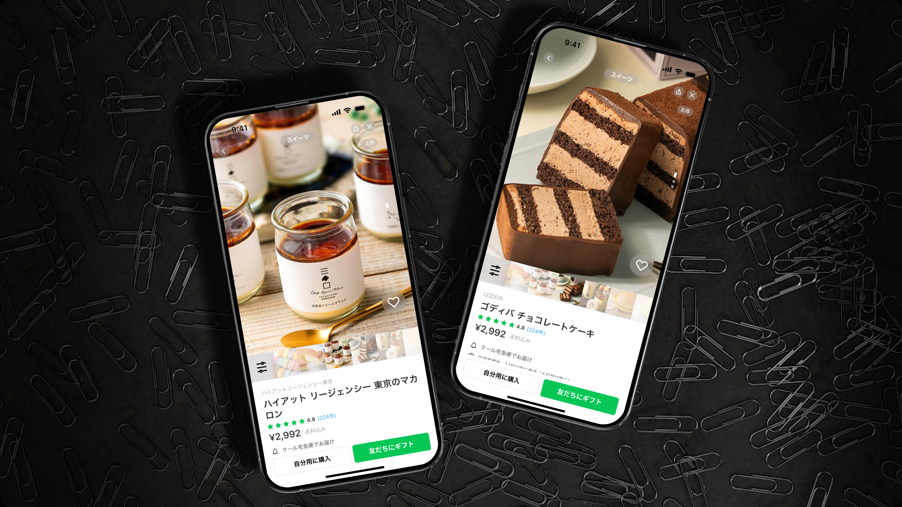
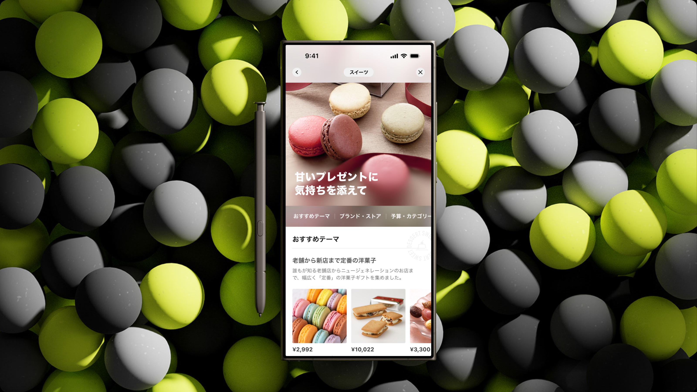

Feature
The hero frames LINE GIFT as a new shopping moment, pairing product imagery with a simple app-like card.
A feature concept for LINE GIFT that uses product cards, playful motion, and gift discovery flows to make digital gifting feel lively.
The hero frames LINE GIFT as a new shopping moment, pairing product imagery with a simple app-like card.
Colorful 3D forms and orbiting elements add the sense of celebration that a gift experience needs.
Phone screens and product feeds show how users can move from inspiration to related products quickly.

